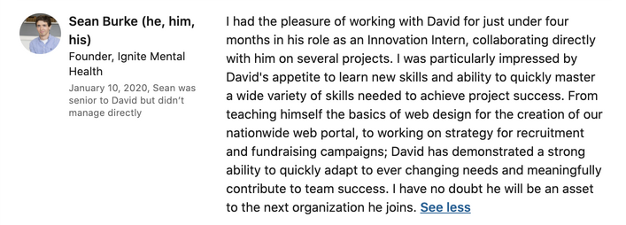

About
Ignite Mental Health is a startup that provides a virtual think tank and network for students across the country who are passionate about mental health. My three coworkers, the founder, and I worked out of Harvard's Innovation Lab, which is a home to many startups and is steeped in the culture of design thinking. I was brought in to be Ignite's Engagement Chair, although I was often involved in fundraising, recruiting, and video editing.
Goals
- Prototype working for a mental health organization
- Prototype working for a nonprofit startup
- Be open to any work Ignite needed me to do
- See how I liked living in Boston
Project: Online Community Website for Student Ambassadors
The portal was to be the main feature of being an Ignite Mental Health Ambassador. The 130 student volunteers we had recruited from over 100 colleges in the country needed a friendly forum to meet each other, discuss policy issues, and eventually mobilize.
Portal Inspiration
We took inspiration from other commmunity portals such as GirlUp, a national chain of women's rights clubs across U.S. colleges.
Options Analysis
Sam and I conducted an options analysis to select the best hosting platform for the ambassadors. We had a budget of $20, so we of course highlighted cost, but other features such as discussion boards and profile customizability were very important to us as well.

Home Page Wireframes

Finished Product
Pranj and I ended up using WordPress to build the following website. I noticed how intuitive and fun using WordPress was to publish a website, but struggled not having control over granular design elements. It, along with Pranj, introduced me to the terminology of web design.

Outcome
- Created a website for 130 volunteers with social features while on a $25 budget and with limited software experience
- With co-workers sent out over 10,000 recruitment emails to U.S. college students and professors
- Led a brainstorm of over 500 mental health policies actions from college student government and mental health organization manifestos
Coworkers
LinkedIn Rec (boss)
Reflection
Coming on the heels of taking the design thinking class that would throw a wrench into my life plans, and having started a mental health organization on Dartmouth’s campus, I likened the Ignite job posting on my school’s career development site like a unicorn in the desert. I was thrilled at the opportunity to blend the mental health space with a design thinking ethos. Plus, it didn’t hurt that I would be surrounded by one of the most beautiful and prolific college towns of all time.
I surprised myself with how fun I had with Pranj in designing the website, but ultimately wanted to do something more hands-on for improving others’ mental health. I took great joy in collaborating with co-interns, loved working in the i-lab, and it opened me up to web design as a meaningful and fun medium of engagement. It would be one that I would revisit in a later internship.